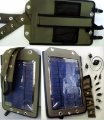
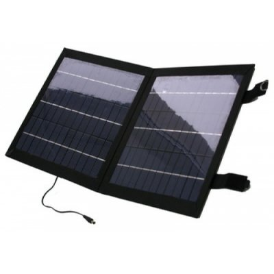
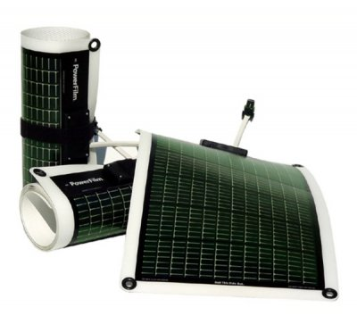
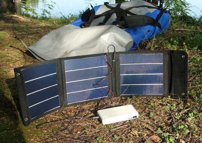
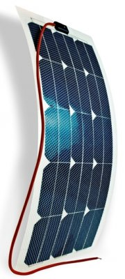
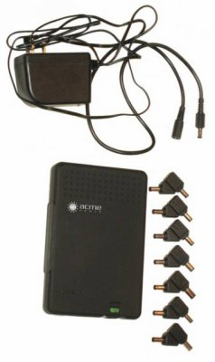
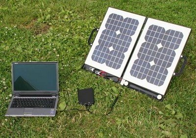
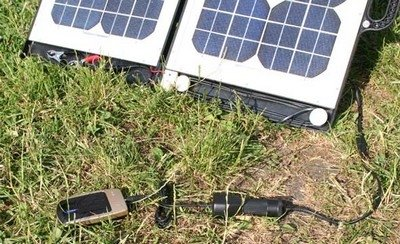

Обзор солнечных батарей для туристов


С каждым годом появляется все больше «электронных игрушек», без которых совершенно не обойтись в походе или на рыбалке. Мобильник, рация, навигатор, фонарь, цифровой фотоаппарат - это минимум, а еще хочется эхолот, видеокамеру, DVD-проигрыватель, TV, радио, ноутбук, холодильник. Не удивлюсь, если скоро будут брать с собой портативную посудомоечную машину, микроволновку и легкую раскладную ванну-джакузи - комфорт превыше всего. А чем все это питать?
Нужен неограниченный источник питания, или заряжаемый от неограниченной энергии. Одним из первых вариантов, который приходит в голову - использовать солнце. Такая мысль появилась не только у нас, но и у разработчиков солнечных батарей (СБ). Эти устройства постепенно перестают быть для путешественников экзотикой, становятся дешевле, и все большее число производителей осваивают их выпуск. Однако, часто в Интернете можно встретить и разочарование от их использования, мол пробовали, не помогло.
Так как же правильно выбрать СБ, чтобы потом не было мучительно больно за бесцельно потраченные средства? Ведь эти батареи все же пока достаточно дорогие, и грамотный их выбор поможет сэкономить приличную суму.
Прежде всего, отметим, что солнечные элементы, из которых и собирают батареи, бывают жесткие - кристаллические, и гибкие - аморфные.
Кристаллические солнечные элементы всем хороши. У них и КПД выше, и срок службы больше, и мощность готовых батарей можно найти любую, вплоть до сотен ватт, а уж цена - раза в два дешевле гибких. Недостаток же только один, но существенный - они очень хрупкие. Представьте себе тоненькую, треть миллиметра толщиной, хрупкую, как стекло пластину размером 10x10 см. Поэтому приходиться производителям мудрить - наклеивать элементы на стекло или пластик, городить вокруг прочный корпус.

Более того, если позвать на помощь здравый смысл, который пошел вздремнуть во время чтения рекламных обещаний на сайте какого-нибудь производителя, то окажется, что и достоинства жестких элементов какие-то несущественные. Для путешественника, во всяком случае.
Что с того, что у гибких батарей КПД меньше, и, следовательно, площадь в разложенном состоянии больше? На природе места хватает, зато в свернутом состоянии они получаются компактнее. Да и полегче будут.
Срок службы - это конечно важно, но он исчисляется десятками лет постоянной работы, а путешественники их используют от силы месяц-два в году. Странно, что производители еще не додумались давать пожизненную гарантию.
Мощность - действительно важно, но и здесь есть ,надежда, уже появились в продаже гибкие батареи более 50 Ватт, вполне достаточно в походе, если не брать с собой портативную микроволновку.
Вывод: жесткие солнечные элементы хороши для стационарных условий, где и успешно применяются. В походы, если позволяет бюджет, лучше взять гибкие батареи, не пожалеете. Но помните, что технология производства гибких батарей очень сложна, и не терпит рационализаторов-любителей, чем часто грешат наши китайские товарищи. Нельзя сказать, что все китайские гибкие батареи плохие, но те, что подешевле - вызывают очень много вопросов по надежности, стабильности и сроку службы. Кстати, именно благодаря таким изделиям утвердилось мнение о том, что гибкие солнечные батареи быстро выгорают.

Второй важный для правильного выбора параметр - это паспортная мощность солнечной батареи. Определяется как произведение выходного рабочего напряжения на рабочий ток при яркости солнца в 1000 Вт/ кв.м. Вроде бы, все здесь просто и логично, но, как всегда, есть тонкости.
Паспортная мощность, по сути — это максимально-возможная мощность в идеальных условиях: полдень, ясное южное небо, батарея перпендикулярна солнечным лучам. Реальные же условия: работа в любое время дня, солнце то в дымке то за тучкой, батарея брошена где попало - на борту лодки, или висит на дереве, или рюкзаке, а значит, ориентация на солнце весьма приблизительна. В таких условиях реальная мощность, получаемая с батареи, будет в несколько раз меньше!
Кстати, некоторые продавцы у нас считают максимальную мощность как произведение тока короткого замыкания на напряжение холостого хода, забывая сказать, что это разные режимы. Получаемая при этом цифра раза в полтора больше реальной. Чего здесь больше, лукавства или элементарной безграмотности, трудно сказать. Но для себя думаю стоит понимать, что стоит за цифрами.
Так же надо хорошо уяснить себе, что если Вы используете СБ без преобразователя напряжения, то часто важнее будет не мощность, а ток. Поясню на примере.
Возьмем две реальные батареи, например, SC-8/12 от SunCharger (8 Ватт, рабочее напряжение 13 В, рабочий ток 0,76 А) и PS-936A-13W от AcmePower (13 Ватт, рабочее напряжение 17,5 В, рабочий ток 0,75 А), и будем заряжать ими 12-вольтовый аккумулятор. Какая батарея быстрее справиться с зарядкой? Правильный ответ - обе одинаково! Потому что токи примерно равны, а избыток напряжения на более мощной батарее попросту пропадает. А ведь 12 Вольт - наиболее распространенное значение напряжения и практически все мобильные устройства имеют адаптер для зарядки от прикуривателя.

И, наконец, третий важный момент при выборе солнечной батареи. Солнечная батарея без накопительного аккумулятора - все равно, что водка без пива в известной поговорке. Почему?
Предположим, мы хотим запитать от солнечной батареи какое-либо устройство с потребляемой мощностью 10 Вт (например, портативный телевизор). Какие варианты можно попробовать?
1. Берем СБ с небольшим запасом по мощности, например, SC-15/12 (15 Вт) и смотрим телевизор только при ярком солнце, днем, не забывая, время от времени поворачивать СБ за солнцем. Тучка набежала, освещенность упала, вместо 15 Вт имеем 3-5 Вт. Телевизор не работает. И как всегда, на самом интересном месте, и 3000 гривен потрачены напрасно.
2. Берем СБ с многократным запасом по мощности, например, FPS-33W AcmePower (33 Вт). Смотрим любимую передачу, почти не отвлекаясь, но только днем, и за примерно 7000 гривен.

3. Берем СБ меньшей мощности, SC-8/12 (8 Вт) и аккумулятор 12В, 4 А*ч, весь световой день заряжаем аккумулятор, просто выложив батарею на солнышко. Собираем энергии сколько получиться, если солнце хоть половину времени выглядывало из-за туч, то 30-50 Вт*ч соберем точно, и смотрим телевизор когда захотим 3-5 часов, а больше и не надо, мы же все-таки отдыхать приехали. Итого: 1500 гривен батарея, плюс 150 гривен аккумулятор, получаем итог - 1650 гривен. Дешево и работает.
А если в качестве накопителя, вместо гелиевого 12-вольтового аккумулятора, взять такое устройство, как универсальный внешний аккумулятор, то дополнительно вы получите практически полный джентльменский набор: комплект переходников для телефонов, ноутбуков, USB порт, различные напряжения на выходе, индикацию уровня заряда, схемы защиты от чего только можно. Универсальные аккумуляторы емкостью от 50 до 150 Вт*ч можно найти за 800-2500 гривен.
Важно только, чтобы он был совместим с вашей солнечной батареей. Так, например, UC-4 AcmePower хорошо совмещается с 12 вольтовыми батареями от SunCharger, a UC-7 AcmePower - может заряжаться только от более высоковольтных батарей этого же производителя.

Итак, батарею выбрали, аккумулятор купили, различные адаптеры для зарядки, шнурки, переходники подобрали, в оранжевый цвет покрасили, чтобы всю эту мелочь не потерять - все, поздравляю, можно отправляться на природу.
Для тех же, кто стремится к совершенству, сообщу по секрету - можно еще поднять эффективность вашей системы на 10-20%. Для этого приобретаем, например, импульсный стабилизатор напряжения от Vampirchik-sun - устройство, разработанное специально для работы с солнечными батареями, и позволя

Как же достичь полной отдачи СБ? Если коротко, то можно сформулировать три основных принципа правильного их использования:
1. Солнечная батарея должна как можно больше времени находиться на солнце и работать, работать, работать - отдавать всё, что она может.
2. Должно быть устройство, которое накапливает всю энергию, что выдает солнечная батарея. Чаще всего, это либо аккумулятор, либо более сложный накопитель.
3. Напряжение зарядки накопителя и рабочее напряжение батареи должны быть по возможности одинаковы.
И напоследок. Солнечные батареи - товар с явно выраженным сезонным спросом. Поэтому, зимой выбор большой и цены умеренные, к весне цены растут, а летом, особенно в первой половине июля, ходовые модели солнечных батарей и универсальных аккумуляторов просто пропадают из продажи из-за большого спроса. И такая ситуация повторяется из года в год. Похоже, что продавцы не рискуют затовариваться в межсезонье, а потом просто не успевают подвезти вовремя, а покупатели откладывают покупку на последний день и часто, к сожалению, остаются ни с чем.
